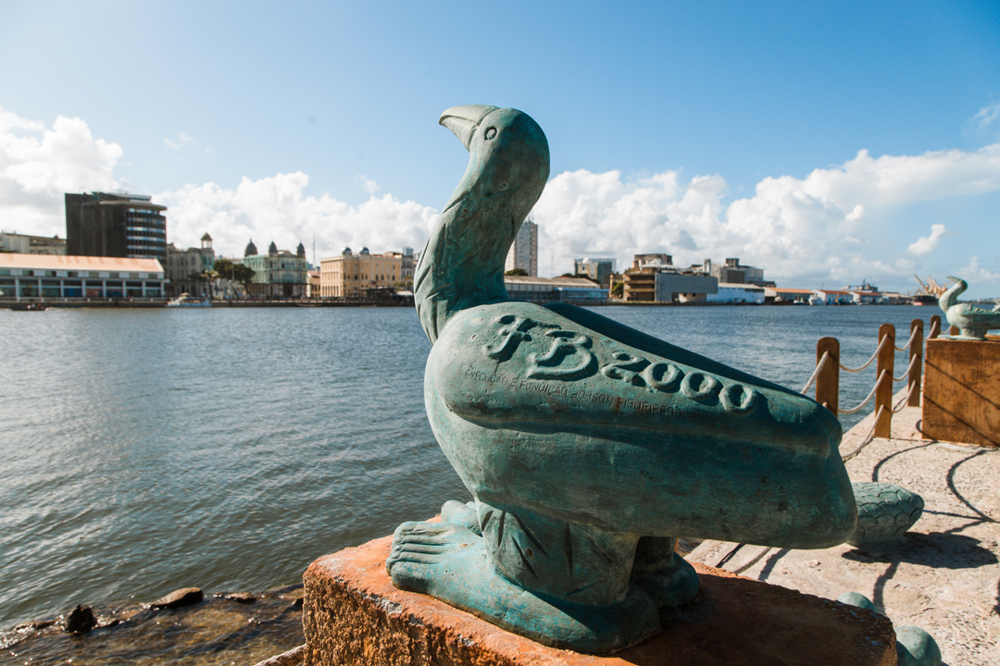
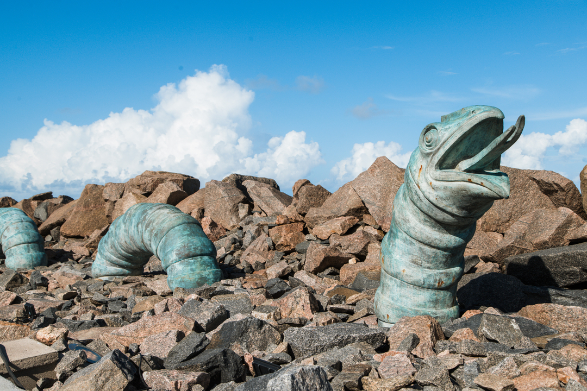
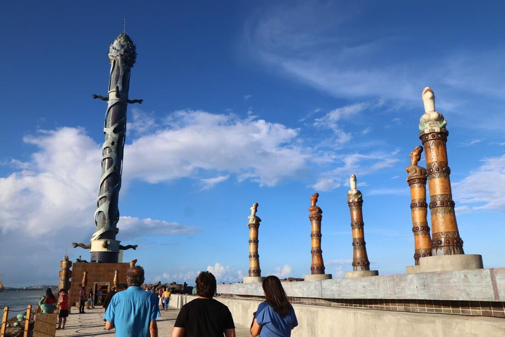

Acesso
Para chegar até o parque, o visitante deve entrar numa embarcação, que sai de um pequeno píer no Marco Zero, e cruza o Estuário do Porto do Recife indo até a entrada do parque ou ir de carro pela Avenida Brasília Formosa.


